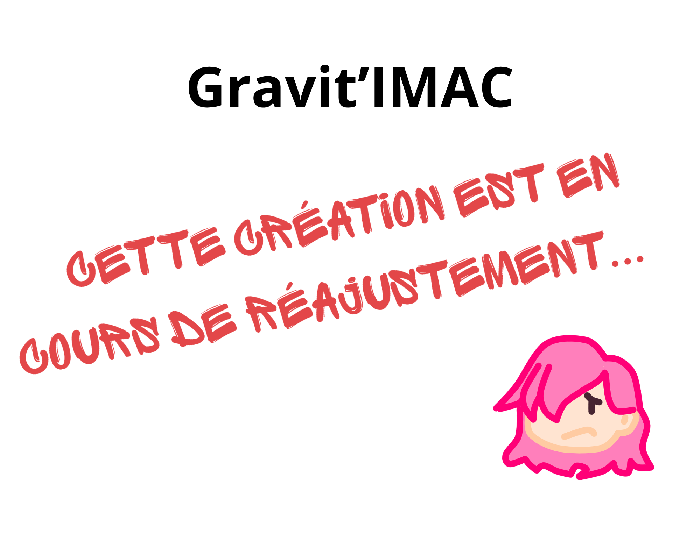

Audiovisuel
Projet 3D

Pendant un semestre, nous avons appris à utiliser le logiciel Blender pour créer des modèles 3D. Afin de valider ce cours nous devions réaliser une courte vidéo suivant une référence : le mouvement d'un objet central tombant et la caméra le suivant. C'était là mon premier rendu Blender. Malheureusement l'ordinateur que j'utilisais m'a beaucoup restreint. Aujourd'hui je souhaite reprendre ce projet et le retravailler afin d'avoir un resultat qui me convienne d'avantage.
Générique
Nous avons appris en cours à utiliser le logiciel After Effect et devions, en groupe, créer le générique de l'oeuvre de notre choix en s'inspirant de Saul Bass. C'est alors que nous nous sommes décidé sur la série animée "Souvenirs de Gravity Falls" de Alex Hirsch.
Traitement de son
Afin de valider le cours de traitement de son de première année d'IMAC, nous devions créer en group eun projet sonore. Nous avons décider de créer un univers où le protagoniste passe d'un endroit à l'autre à travers des portes. J'ai, pour ma part, réalisé la partie en ville.
Breathe
Breathe est un court-métrage réalisé dans le cadre d'un cours de réalisation vidéo. Nous avions comme thème le transhumanisme et avons décidé de réalisation un monde où l'humain est noyé dans l'humanité et où la voix propre d'un être est tue.